Fillit Example 2
Here we are going to break down a project called fillit
The objective of this project is to find the smallest size square or grid that a set of tetriminos can fit into.
Below are examples of a tetrimino. Example one


Main
This main function returns an integer. It takes two arguments: an integer called av then a character pointer to a pointer called ac. This main function is what is ran when you execute the binary from the compiled program. The parameter av refers to how many arguments were passed when the executable was ran. The character pointer to a pointer is the character values of those extra parameters that were ran that are split by spaces. After this, we declare five different variables. We first declare a size_t called fd, then a size_t called rd. After this, we declare a character pointer called str, then a pointer to a pointer called tbl. Finally we declare a size_t called blocks.
Next we move into our first check. We use this function called CHK1 which is defined in the header file in libft. With this header function being (a,b, c) if(1){if (a){b; return(c);}} this says the function takes three parameters. A and b and c. Next the if (1) means it’s always true. After that if the if (a) states that if the parameter passed at a doesn’t equal null then return the c value from the function. Otherwise it’ll return the b value.
We apply this in the sense that if av doesn’t equal two then we print “usage: ./fillit sourec_file\n” to the terminal through stdout. Next we initialize str to a new string malloced using ft_strnew function with the BUFFER_SIZE passed a parameter. BUFFER_SIZE is a marco that is defined in the header file of fillit. The value of this 546 which accounts for more than enough for the 26 tetriminos we’ll need to store. If this value returns null we then use the error() function which prints error the the terminal then ends the program. Otherwise it does nothing but continue.
Next we have a CHK2 call which is again defined in the libft header as such. It consists of four parameters. (a, b, c, d) if (1) {if(a){b; c; return(d);}} This states that if the value of the parameters is not null then return the value passed as d. Otherwise return both what was passed at b then c. We use CHK2 to see if initializing fd to open returns a -1 or not. Open is a function from the fnclt library in c. It takes three parameters. One being the indexed value at 1 in ac, other being O_RDONLY which means it is a read only function. Then a third S_IRUSR which makes sure the users has read permissions on the file. If the value is not -1 it does nothing. Otherwise we free the str we allocated from memory then return the error function which ends up printing out error to the terminal.
Next we have a CHK3 function that is also from the header in the libft file. It states that (a, b, c, de, e) if (1){if(a){a; c; d; return(e);}} this states that if the parameter a passes is not null or returns true than return e from the function otherwise return a, c, and d. We use this to read in the file. We initialize rd to the return value of read() which takes three parameters. One being the fd we got from the previous call. The second being the str we initialized. Then third is the BUFFER_SIZE which is 546. This function shall read in a file up to 546 bytes which is more than enough to cover the 26 tetrimons we are going for. We then check to see if this is less 0. If it is less than 0 we return error() which prints out error to the terminal. We then free the str we malloced, then use the close() function with fd as a parameter to close the file we opened to read. If not , then we do nothing.
Next we move to use the close() function with fd as a parameter. This closes the file we were reading in.
Next we use CHK2 to make sure we have 545 spaces in the str string we allocated then read in. If it does not equal zero we do nothing. Otherwise we print error to the terminal then free the malloced string. Next we run CHK2 with passing the valid_0 function with the str along with rd as parameters. Rd has the amount of bytes read in. If this check returns null then we print error and free the str we malloced otherwise we do nothing.
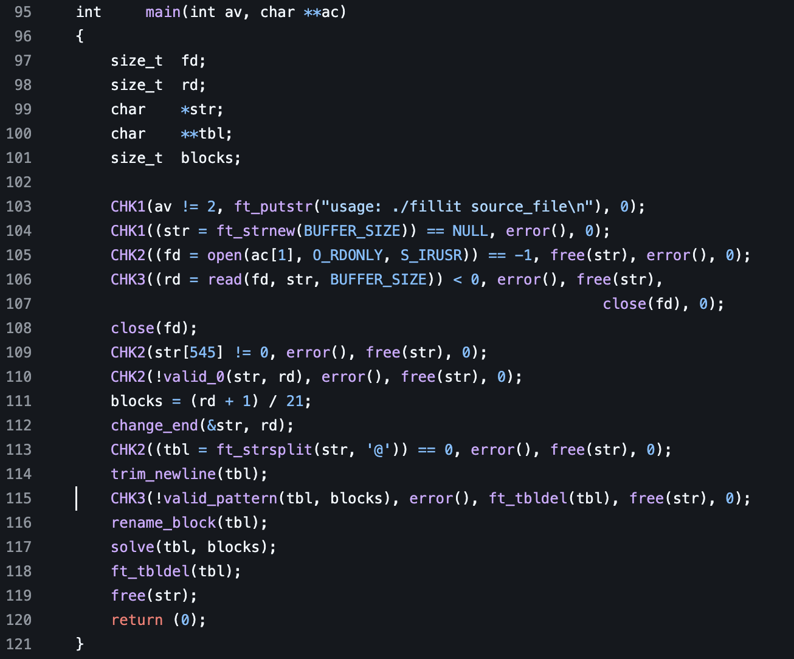
valid_0
This function returns a t_bool. It takes two parameters: a character pointer str then an integer bytes. We start by incrementing bytes. Next we check if the first character in str is not equal to a ‘.’ or a ‘#’ we return false indicating that we have been passed improperly formatted data. Next we move on to call the valid_1 function with str and bytes as parameters if it returns false we return false from the function.
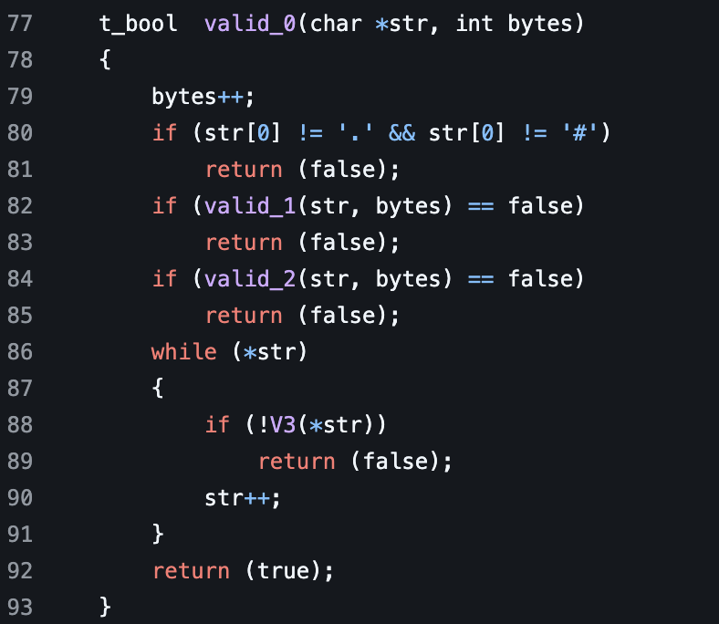
valid_1
This function returns a t_bool that takes two parameters. One parameter is a character pointer called str then another integer called bytes. Next we declare four integers named n, i, count1, and count2. We initialize n to 0. Next we loop while n is less than the bytes parameter we passed. Next we initialize i to -1 at the start of the loop. After we also initialize count1 to 0 then count2 to 0. After this we increment I using ++i which adds one before starting the function rather than i++ which adds after. We then check to see if the value is less than 19. If it is, we stop the loop. Next we check if the index value of str at n + 1 is equal to a “# “ If it is, we increment count1 by one. Then we check if the same indexed value is a ‘.’ if it is we increment count2 by one. After we check if count1 is not equal to 4 we return false. This is because every teterimino can only have a total of 4 # in it. Next we check if count2 is not equal to 12 then we also return false as each tetrimon can only have 12 total ‘.’ in it. After this we increment n by 21 due to the fact there is a total of 20 characters in a teterimo plus one extra that’s a new line that separates them. After we make it through all the bytes read we return true if all the conditions are not met to return false.
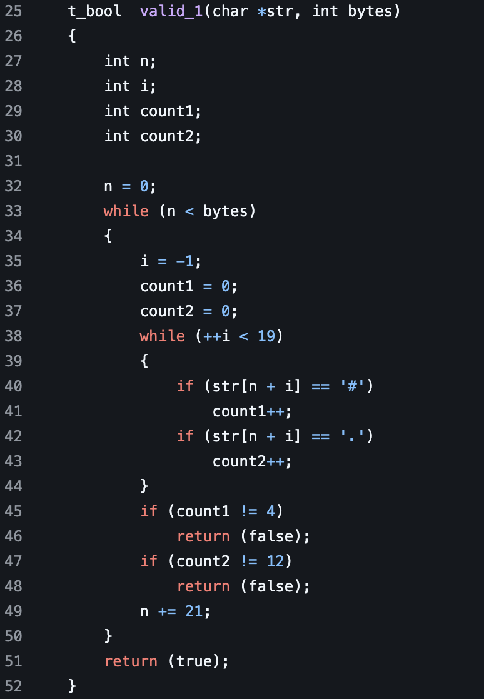
valid_2
This function returns a t_bool while taking two parameters. One called a character pointer str then another integer called bytes. First we declare three integers called n, i, and k. Next we initialize n to 0. Then we start a while loop with the condition that n is less then bytes. After this we initialize i to equal 0. Then while i is less than or equal to 15 we loop. First we set k equal to n + i. Then we use a if statement with V1 and V2 checks separated by or. V1 is defined in the filit header file. It states (a) (a == “#” || a == “.”) which means that if a is equal to a “#’ or a “.” then return true. V2 states that (a) (a == ‘\n’) which means that if the parameter passed at is equal to a new line then return true. This if statement reads that if the k index value of str is not a “# or a “.” or that index value plus one isn’t either or plus two isn’t either or pulse three isn’t either or the the str value of index plus k is not a ‘\n’ then return false from the statement. Otherwise we increment it by 5 until it is less than or equal to 15. After this we increment n by 21 to move forward to the next tetrimmino that was parsed in. If we make it through the loop without hitting a false return we then return true as we can assume the data this far is has been properly formatted.
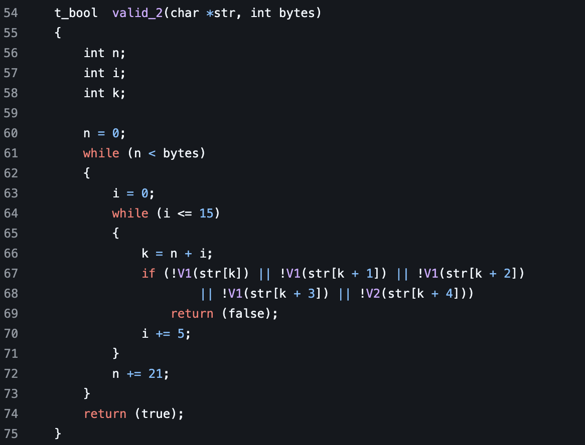
back to valid_0
If we make it through valid_1 and valid_2 with both returning true we then run a file V3 check on the entire character pointer str by loopthing through it while it is not null V3 defined in the header file of fillit stats V3(a) (a == “#” || a == “.” || a == “\n”) This makes sure that every character passed is one of the three valid characters we are looking for in the file we have read in. If any of those characters equals something else we return false to end the program. Otherwise we continue with returning true.
back to main
Now that we have confirmed we have vale character next we set the value of blocks to (rd plus one) divided by 21. This gives us how many blocks or tetrimons we are going to be expecting. Next we call the change_end function passing the reference in memory to str along with rd as a second parameter.
change_end
This is a void function that takes two parameters. This frist is a pointer to a pointer character. Next is an integer bytes. We first declare two variables one integer called i then another character pointer called src. Next we loop through while i is less than bytes. We set the index value of ch at i - 1 to equal a ‘@’. Next we increment i by 21. This replaces the end of each tetrimino with a @ instead of a new line.
Next we call CHK2 on initializing the value of tbl to the return value of ft_strsplit() with str passed as a parameter than the character ‘@’ we then check if the return value is null. If it is we print error then free the str from memory otherwise we do nothing. We have covered ft_strplit in our libft this takes the character pointer str then creates a new array for every time there is an @ symbol present. This is what allows us to have all the tetrimons stored in a multidimensional character array. Next if there was no error we pass tbl to the trim_newline function.
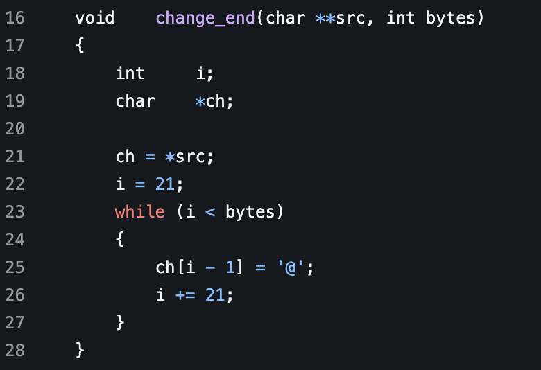
trim_newline
This function is a void function that takes one pointer to a character pointer value called src. We declare four variables. Three integers named i, j, k. Then a character array called tmp with 20 characters. Next we initialize i to 0. After this we loop through i while the index value is not null. We initialize j to 0 then k to 0. After we loop through while the indexed value of src at i and j is not equal to null. If the index value is equal to a ‘\n’ we then iterate j. Then set the index value of tmp at k to the indexed value of src at i and j. After this we increment k then j up one. Then after this we use ft_strcpy to copy the value of src at index i and the value of tmp. This allows us to create an array of characters that has the newlines of the tetriminos removed.
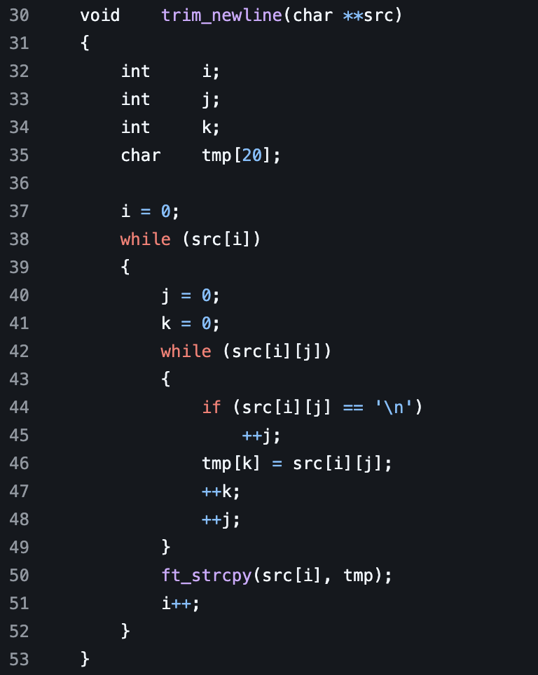
back to main
Now that we have called trim_newline on our tbl variable. We call the valid_pattern function with tbl and blocks as parameters. We use CHK3 which means that if valid_pattern returns null we then print error, use ft_tbldel to free the memory we allocated for the table, then free str which is the value of the memory allocated for str. Otherwise we do nothing.
valid_pattern
This function returns a t_bool. It takes two parameters. One pointer to a character pointer called src then another integer called blocks. After this we declare four variables. A multidimensional character array called valid with 20 characters arrays along with 15 characters within each array. This static declaration allows the memory to be allocated to stack when the program is compiled rather than at return in the heap. Next we declare three integers named i, j, and valid_flg. Next we call the populate_valid() function with -1 as well as valid as the parameters.
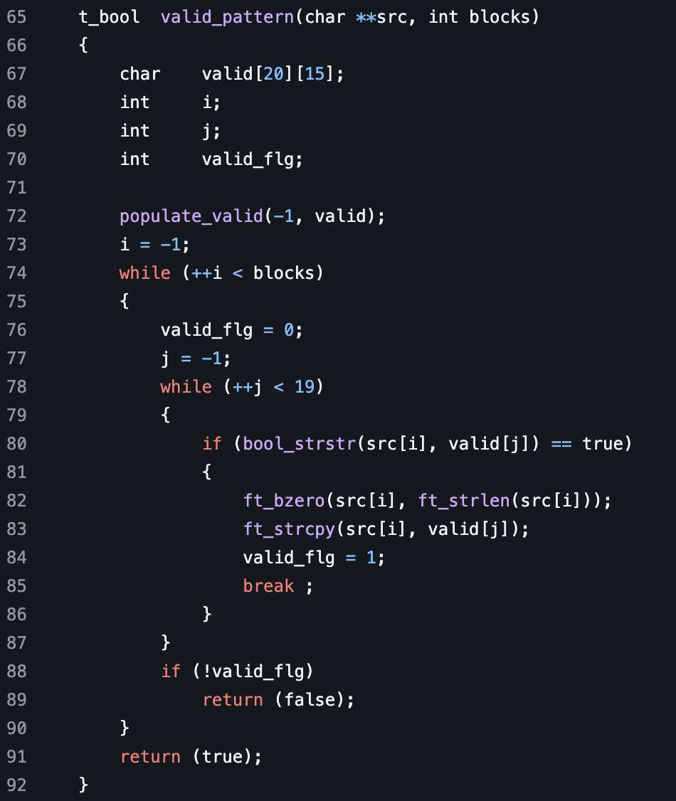
populate_valid
This is a void function that takes two parameters. One is an integer called i another is a multidimensional character array called valid. Next we set the condition of the while loop to increment i while it is less than 20. We then use the ft_bzero function from our libft with the indexed value of valid at i to be set to 0 along with the sizeof() the indexed value of i. Next we hardcode all the possible patterns into our valid multidimensional array using the ft_strcpy function from our libft. There are a total of 19 possible patterns that a tetrimino can be when in the context of a properly parsed character array. This initializes the values of the multidimensional character array we passed in the parameter.
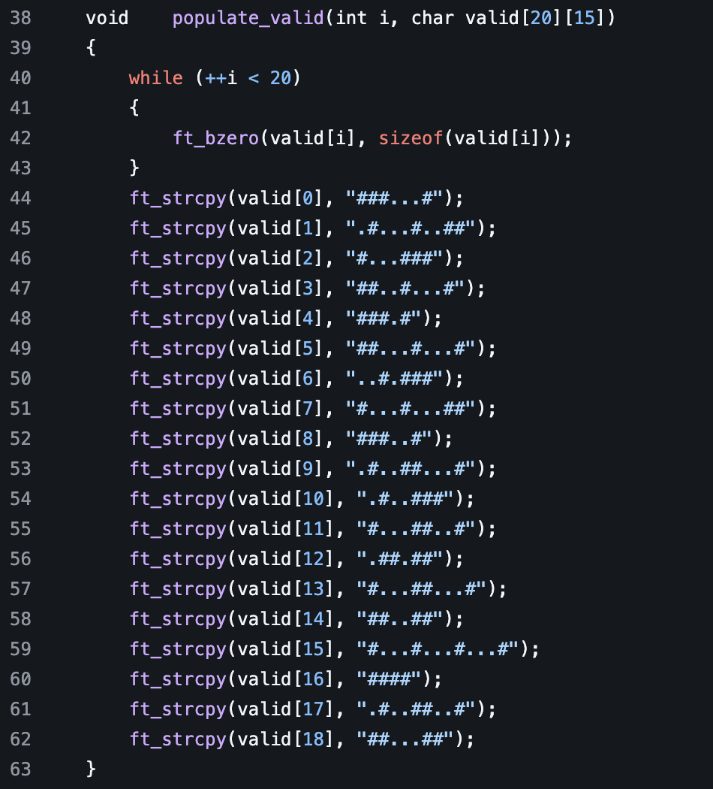
back to valid_pattern
After we initialize our valid variable with the populate_valid function. We then continue to set i equal to a negative one. Next we iterate through i while it is less than the block parameter passed in the top of the function. Next set our valid_flg variable to 0. We also set the value of j to negative one. After this we increment through j while it is less than 19. We use an if statement to check if the return value from the bool_strstr function is true. We pass the indexed value of i on the src value that was passed in as a parameter. This contains all the character arrays that were parsed from the file entered. Next we pass the index value of j on valid as the second parameter. This holds all the values of valid patterns we initialized above
bool_strstr
This function returns t_bool. It takes two parameters that are both constant character pointers. One is called src another is called to_find. We then declare an integer len. After we loop through the constant character pointer source until it returns a null pointer. Then we set the value of i to 0. Next we run a while loop with the condition that src is equal to to_find. While this condition is true we increment to_find, src, and len. We then use an if statement to check if to_find has returned a null pointer or not. If it has, we then return the value true. This indicates that it has successfully verified a valid pattern within the character pointer that was passed. If src is not equal to to_find we then send the value of src equal to src subtracted from len. We also set the value of to_find equal to the value of to_find subtracted by len. After this we then increment src.
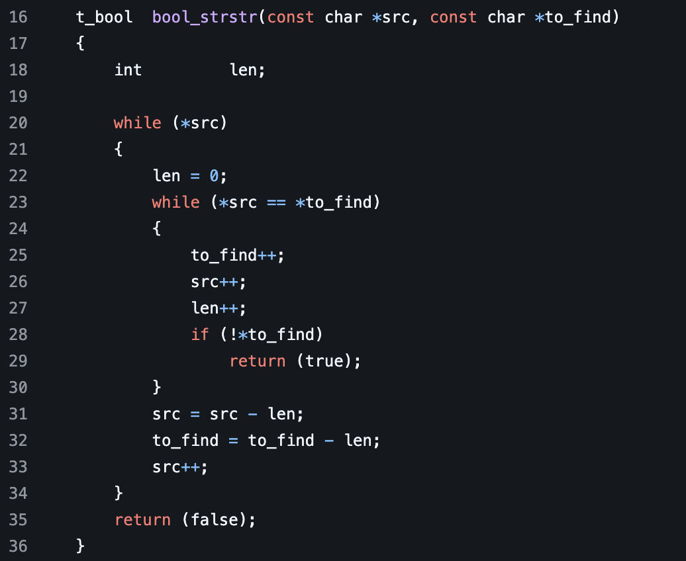
back to valid_pattern
If the return value from bool_strstr is true this indicates we have found a valid match. After we then use the ft_bzero to initialize our character pointer to the length of what we have passed as the src variable. Next we call our ft_strcpy function to copy the value of the valid pattern at index j to our src value at the index value of i. After this is done we set the valid_flg variable to equal one. We then call the break function to exit the while loop. After we exit the while loop we check to see if valid_flag is still equal to 0. If it is, this means we did not find a valid pattern in the tetrimino. We then return false from the function to exit it entirely. If not we then increment i to look at the next block or pattern that was passed to the function to check for another valid or invalid pattern.
back to main
We then use a CHK3 call on the return value from the valid_pattern() function. This called states that if the valid_pattern function returns a false. We then print an error to the terminal. Use ft_tbldel with the tbl we allocated as a parameter to free it from memory then calle the free function with str as a parameter to free that from memory as well. Otherwise we continue the function. We then pass tbl as a parameter to the rename_block() function.
rename_block
This is a void function. It has one parameter which is a pointer to a character pointer called sr. We then declare three variables One is an integer called i. We have a character variable called n. After this we declare a character pointer called tmp. We then initialize the value of i equal to 0. Next we then initialize the value of n equal to ‘A’. Now we enter into a while loop with the condition that the indexed value of src is not equal to a null pointer. Next we set our tmp variable equal to the value indexed at src. Next we then loop through the value of tmp while it is not a null pointer. Next we check the if statement to check if the value of tmp is equal to a ‘#’. If it is, we then set the value of tmp equal to the value of n. After this we increment tmp until it returns a null pointer. After this while loop is done we increment n as well as i by one. This allows each character array in src to be changed from a “#’ into the proper character. Increment the value of n has it increase from a ‘A’ to ‘B’ then to ‘C’ so on then so fourth. After this we call the solve function from our main program.
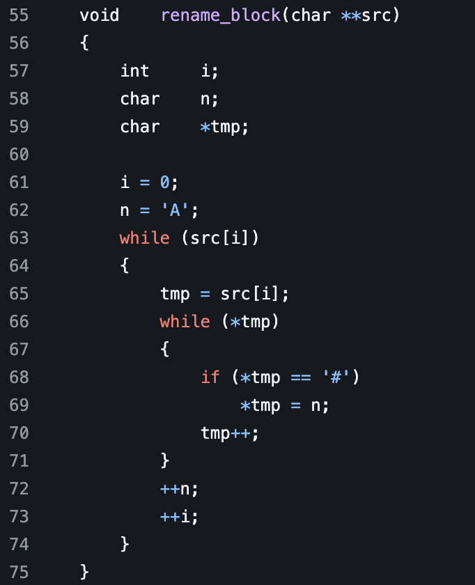
solve
This function returns an integer. It takes two parameters. One is a pointer to a character pointer call tbl. Another is a size_t called blocks. Next we declare two variables. One is a pointer to a character pointer called map another is a size_t called map_size. We then initialize our map_size variable to the return value of initial_board_size with the parameter of blocks passed. This function shall return the smallest possible board that the number of tetrimions passed can fit on. This is an optimization that allows use to skip the checks of impossible board sizes.
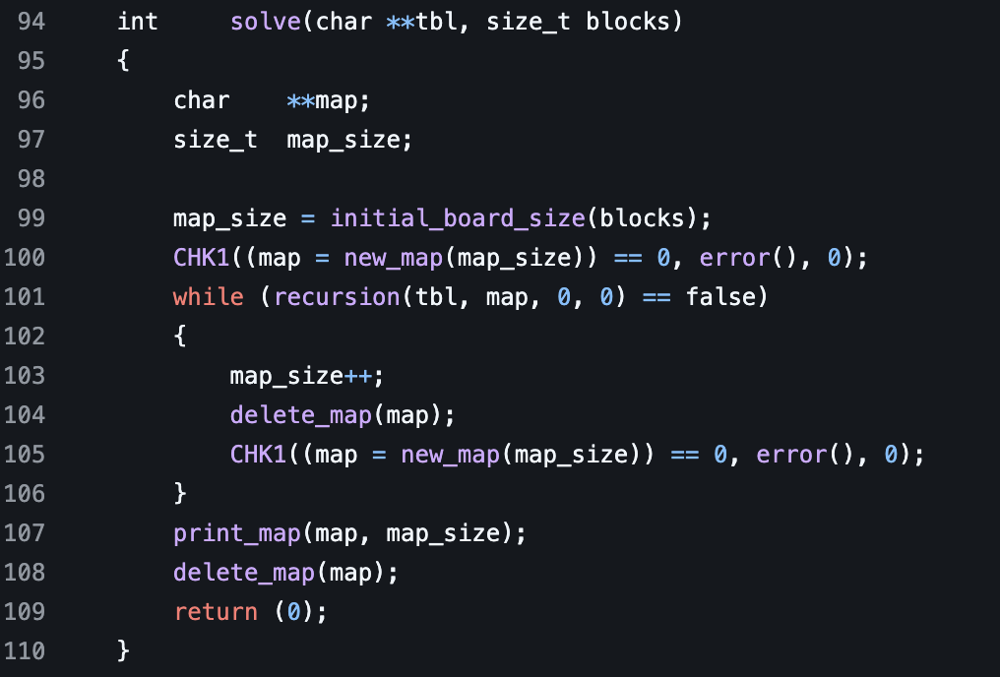
inital_board_size
This function returns a size_t. This function also takes one parameter called nb_blocks. We then declare two size_t variables. One is called min_size another is called i. We initialize I to equal two then initialize min_size to the value of nb_blocks * 4. After this we then fun a while loop with the condition that min_size is greater than the value of i multiplied by i. Using this formula the number of teteriminos multiplied by 4. Then finding the highest value of with in that number of i * i allows us to calculate the smallest board size possible for all the passed tetrimions to fit on.
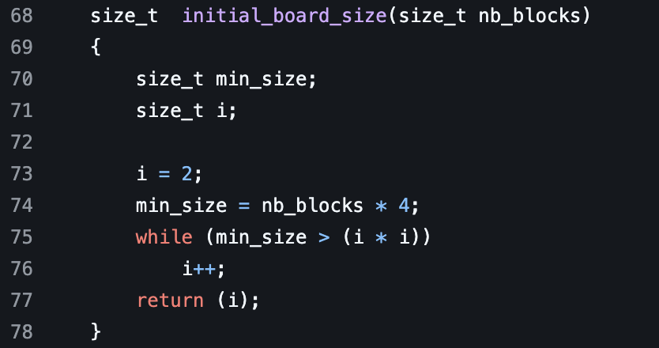
back to sovle
Once we have the smallest possible board size we then use the new_map function to initialize our map variable with the return value of the new_map function with map_size passed as a parameter. We use the CHK1 function defined in the libft header to check that the return value from new_map is not equal to null or 0. If it is, we print error to the terminal then stop the program. If it isn’t null or 0 we then continue to the next part.
new_map
This function returns a pointer to a character pointer. It takes one parameter which is a size_t called size. Next we declare four variables. Three integers called i, j, and n_size. The fourth one is a pointer to a character pointer called map. Next we initialize the value of n_size to equal size + 3. Next we use a CHK function to initialize the value of map to a newly allocated space of memory that is n_size plus one. If the value of map is null or 0 we return 0. Next we call our ft_bzero function with map as well as n_size passed as parameters that initializes the map’s values to 0. We then set i equal to negative one. Next we loop through the while loop while incrementing i by one. We set a condition for the loop that is while i is less than size. We also typecast an integer to the size variable as it is passed as a size_t. Next we use the CHK1 function on the return value from the ft_strnew function with an n_size parameter. If the return value is null or zero we call the delete_map function then pass map as a parameter. This frees the map we initialized while then returns 0. Otherwise we don’t do anything. Next we set the value of j to negative one. After this we loop through j while it is less than size. We set the character value of map at index i then index j to the value of a ‘.’ to start creating the board. After this loop has iterated we then move to the next while loop which is run with a condition of while i is less than n_size. This then uses CHK1 to add three other rows to the map variable using ft_strn with n_size as a parameter to allocate a new string. If it returns 0 or is null we call delete_map then return 0. We iterate i after. Then we set the final value of map to 0 indicating it is the end of the map.
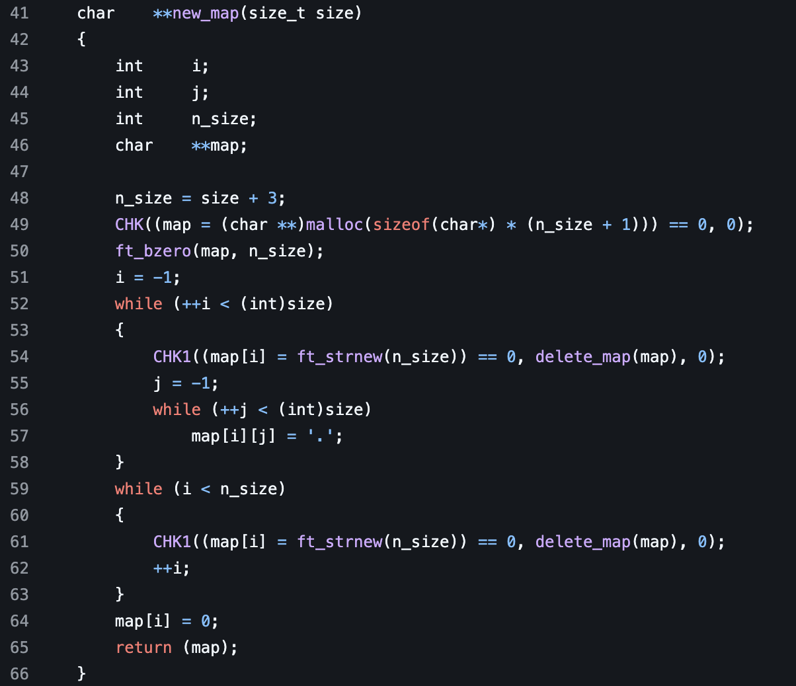
back to solve
After we have set the value of map to the return value of new_map as well as it passing checks we move to the while loop. This while loop runs with the condition that the recursion function is returning false. We pass the value of tbl long with our map then 2 0’s as parameters to this recursion function.
Recursion
This function returns a t_bool. It takes four parameters as well. It takes two pointers to a character pointer as well as two integers. The first character pointer is called tbl this holds all the values of the tetrimons we passed as strings of validated patterns. The next one is called map, this contains an allocated map of ‘.’ this a square grid of values determined by size that was passed prior. If size was 4 the board is a 4x4 is the size was 10 the board is a 10x10. Next we have an integer called col that is shorthand for column. Next we have an integer called row.
We start the function by calling an if statement on tbl. This checks if the value of tbl is null. If it is, we return true because this indicates that we have safely placed all the tetrimons onto the board. This if statement acts as we call a base case in recursion. It has to hit this in order for the function to know it has found a viable solution. Next we start a while loop with the condition of map at the index value of row is not null. We then start another nested while loop with the condition that the index value of row then col is not null. After this we call the is_safe function with map, tbl, col, and row as parameters for the spot we are checking on the map or grid. If it returns true we execute the code below. If now we increment col.
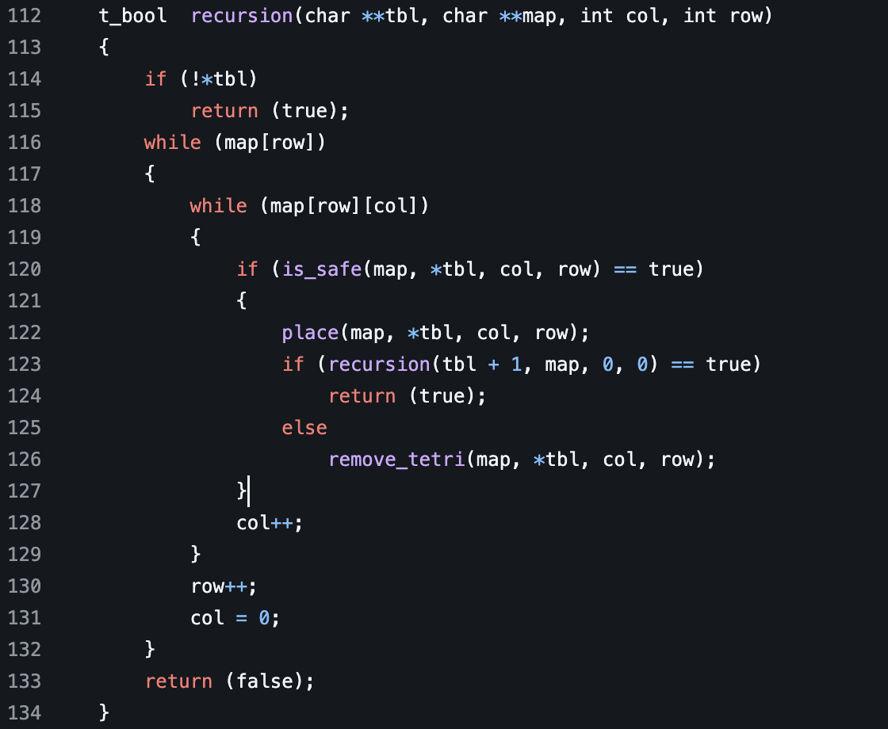
is_safe
This function returns a t_bool. It takes four parameters. One pointer to a character pointer called map. A character pointer called tetri. Then two integers called col and row. We then declare a size_t called i then an integer called init_col. Next we initialize inti_col to col. Then we initialize the value of i to 0. Next we run a white loop while the character pointer value of teteri is equal to a ‘.’. We then call a DO3 function which always returns true. We then iterate i up one then tetri up one, then init_col is subtracted back one. Once the character pointer value of tetri is not equal to a ‘.’ we then move to check if the init_col is less than 0. This would indicate that the tetrimino we are checking wouldn’t be out of bounds on the place we are checking on the map. We return false if this statement is true. Next if this is false we move to the next while loop. This while loop has a condition that while the character pointer value of tetri is not equal to null we loop. First we have an if statement that checks if i is greater than three. If this is true we set the value of i to 0. The value of col is set to the value of init_col then we iterate up on row. We do this because this keeps the structure of the tetrimino on a horizontal and vertical grid when it is being read in as a flat character array. Next we check if the value of the character pointer tetri is equal to a ‘.’ If it is we use DO2 which always returns true to iterate i as we as col up by one. Then we use a CHK function along with a DOT function that is saying if the index value of map at the row and col is not a dot, it is not null, and the character value of tetri is not a dot then we have to return false is it is not an available spot for our tetrimino character to be placed.
Next we call another CHK to see if the value of map indexed at row then col is null or 0 and the value of the character pointer tetri is not a ‘.’ then we return false as the tetri can not be placed out of bounds of the map. Next we run an if statement that checks if the map at indexed row and col is equal to a dot and the value of the character pointer tetri is not a dot then we iterate col as well as i by one. Next we iterate the character value of tetri to move to the next character. If we make it through the entire character array of tetri we then can safely assume that we have found a spot on the map that the tetrimino is able to go to. We then return true from the function.
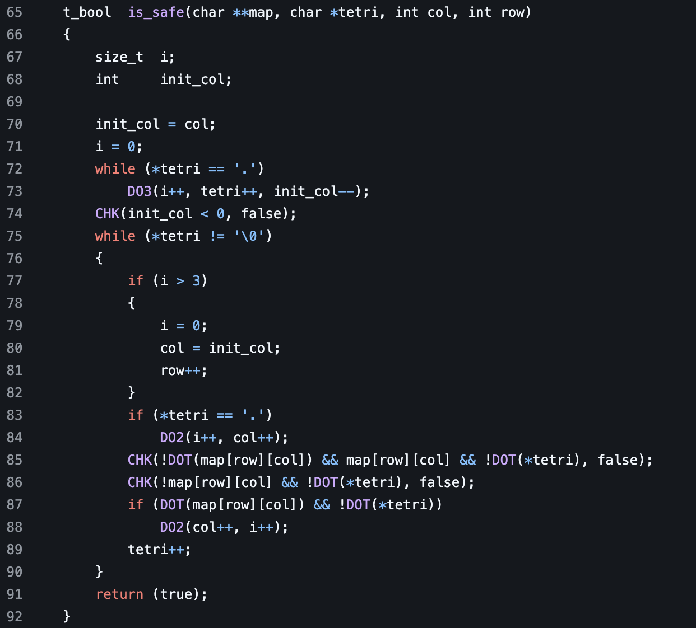
Back to recursion
Depending on the return value from is_safe if it is true we end up further into calling the place function with map, tbl, col, and row as parameters.
place
This is a void function. It takes four parameters. One pointer to a character pointer called map, another to a character pointer call tetri then two integers named col and row. Next we declare two variables called size_t i then an integer called inti_col. We then initialize init_col to the value of col and i to 0. Next we loop through the tetri character pointer while it is equal to a ‘.’. We call DO3 which always returns true to iterate i as well as tetri up one while subtracting one from inti_col. Next we use a while loop with the condition of the character value of tetri not equaling a null pointer. Next we use an if statement to check if the value of i is greater than 3. If it is, we set the value of i to equal 0. Then we set the value of col to init_col. After that we increment the row by one. This again keeps the shape of the tetrimino that is stored in a flat character array. Next we check if the character pointer tetri is equal to a ‘.’ or not. Then we use the DO2 function that always returns true to iterate i as well as col up by one. After we check that the indexed value of map at row and col is not null or 0 and the the value of the character pointer tetri is not equal to a dot. If these conditions are met we then use DO3 function that always returns true to set the indexed value of map at row and col to the value of the character value of tetri then increment col and i by one. This part is updating our map to the character value of the tetrimino instead of the ‘.’ it has there. After this we iterate up tetri by one.
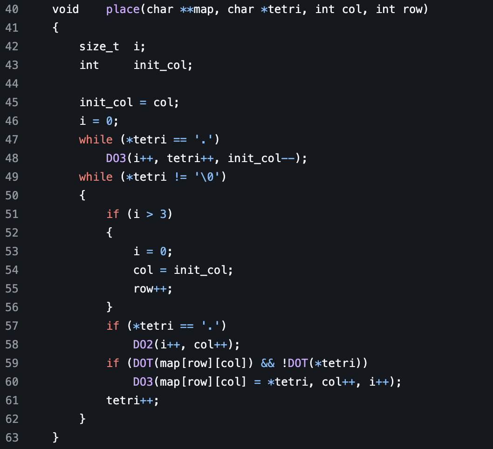
Back to recursion
Once the void function place has been called. Our map is there updated with it’s new values. We then recursively call this function using tbl plus one to increment up to the next tetrimino we have stored then we also pass the updated map as a parameter. Then we pass the values of 0 to col and 0 to row to start the search on the new board again from the next tetrimino. If this function returns true we then return true from this function as well which helps stop the recursive calling.
If recursion returns false we then use back tracking by calling the remove_tetri() function with amp, tbl, col, and row as parameters.
remove_tetri
This is a void function. This function takes four parameters. First one is a pointer to a character pointer called map. The other is a character pointer called tetri. The next are two integers called col and row. Next we declare a character value called ch then a integer called i. Next we set the value of ch equal to the return value of get_letter with tetri as a parameter. This function returns the character value of the tetri passed. Next we initialize i to equal 0. Then we use the while loop with the condition that map is not null at the index value of row. Then we initialize col to equal 0. Next we do a nested while loop that runs while the map at index value row then col is not null. We use an if statement where i is equal to 4. If it is, we can assume that all four of the tetri’s have been removed from the board successfully. We then call the return statement which ends the function. Next we check if the index value of map at row and col is equal to the value of ch which holds the character letter for the tetri. If this is true then we increment i. After we set that value to a ‘.’. Next we iterate up on col by one. This removes any tetrimons that were placed in the board however didn’t end up working with all the others placed.
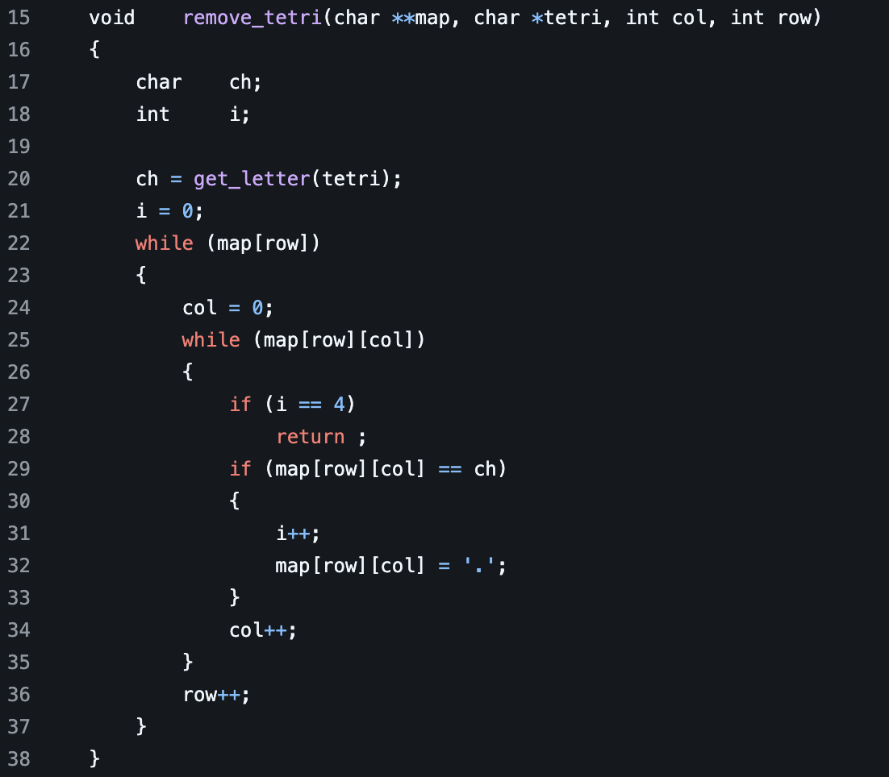
back to solve
While recursion is returning false, we increment up map_size by one this increases the boards value from a 3x3 to a 4x4 then so on and so forth. Then after we increment up size we call the delete_map function with our old map as a parameter.
delete_map
This is a void function. This function takes a pointer to a character pointer called map. Next we declare a size_t called i. After this we initialize i to equal 0. Then while the indexed value of map at i is not equal to null we loop through the map variable. We call the free function to clear the location in memory associated with the map value we allocated. We then iterate i. After the loop is done we call free again to wipe the memory of the variable we allocated for.
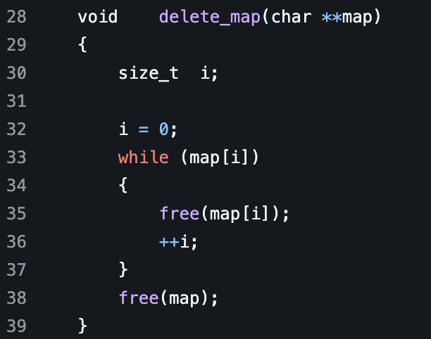
back to solve
After this we use CHK1 function. We first set the value of map to the return value of new_map with the update map_size variable as a parameter. Then in the CHK1 function we say that if the return value of this is 0 we return error() which prints error out to the terminal. Then we return 0. Otherwise we do nothing. Once recursion returns true. We have found a solution where all the pieces fit into the map, grid, or board. We then call the print_map function which prints out the solution to the terminal.
print_map
This is a void function; it takes two parameters. One pointer to a character pointer then a size_t called size. We declare a size_t called i. We initialize i to 0. After this we use a while loop with the condition that i is less than size. After we use our ft_putstr function to print the character array and the index value of the map. After we print a new line using ft_putchar. After we iterate I. This function prints out the variable map we passed to the function.
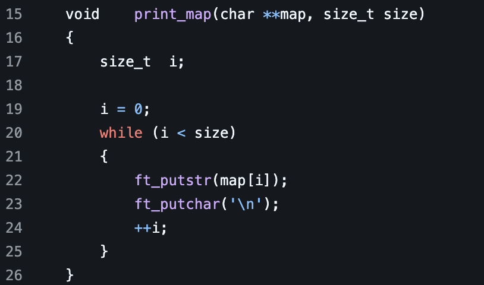
back to solve
After we call print_map we then call the delete_map function to free the memory we allocated for the board to ensure no memory leaks. After we return 0.
back to main
After our solve function is ran. We then call ft_tbldel with tbl as a parameter to again free the memory we allocated for the tetriminos. We then free the memory of the str variable we allocated for as well. After we return 0 ending the program.